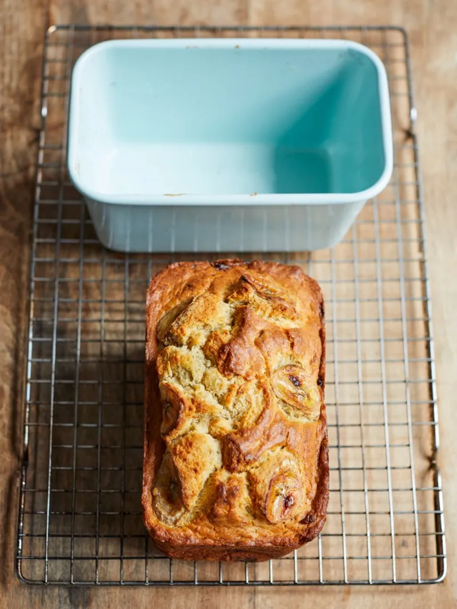

Banana bread

Banana bread
This simple recipe for banana bread is a great way to use up all the old bananas you have lying around.
Ingredients
- 125 g unsalted butter , plus extra for greasing (at room temperature)
- 2 large free-range eggs
- 4 ripe bananas
- 2 tablespoons runny honey
- 2 tablespoons unsweetened apple juice
- 250 g self-raising flour , plus extra for dusting
- 1 big pinch of ground cinnamon
- 50 g pecans , optional
Steps
- Preheat the oven to 180ºC/350ºF/gas 4.
- Lightly grease the bottom and sides of a 1-litre loaf tin with a little butter – I use a folded-up piece of kitchen
paper to do this.
- In a large bowl, use a wooden spoon to beat the soft butter until creamy.
- Crack in the eggs and beat them with the butter. It might look a little lumpy but don’t worry, it will come back
together later.
- Peel 3 of the bananas, then mash and smush them into the mix with a fork so you’ve got a mixture of smooth and
chunky.
- Stir in the honey and the apple juice, then use a spatula to fold in the flour and cinnamon, taking care not to over
mix.
- If using, chop the pecans on a chopping board using the cross-chop method (or you could bash them with a rolling
pin), then fold them through the mixture.
- Spoon all the mixture into the loaf tin, then peel and slice the remaining banana and poke into the top. Bake for 40
to 50 minutes, or until golden and cooked through. To check if it’s done, stick a cocktail stick or skewer into the
middle of the loaf, remove it after 5 seconds and if it comes out clean the loaf’s cooked; if it’s slightly sticky
it needs a bit longer.
- Allow the loaf to cool slightly, then carefully turn out on to a wire rack to cool completely.
- Transfer to a nice plate, cut into slices, then serve. It’s delicious spread with butter, honey, your favourite jam
or even chocolate spread. Have fun!